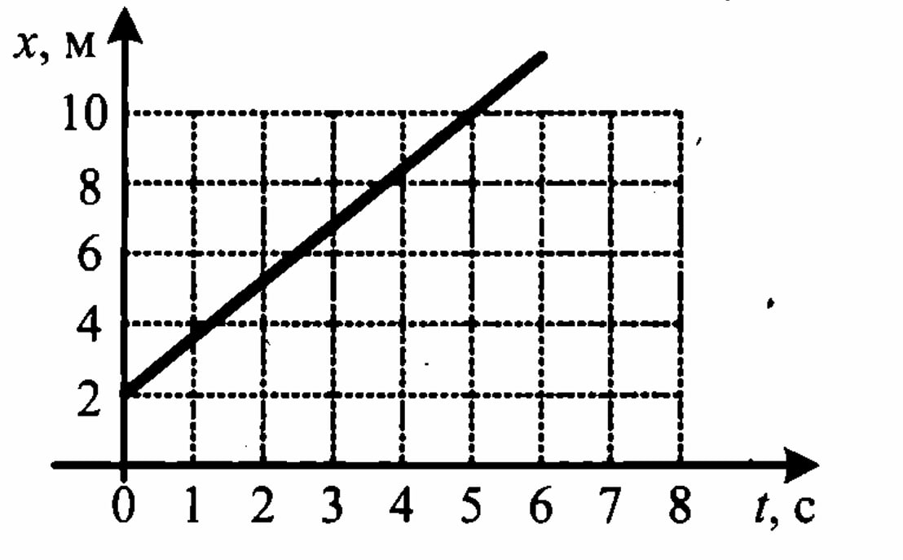
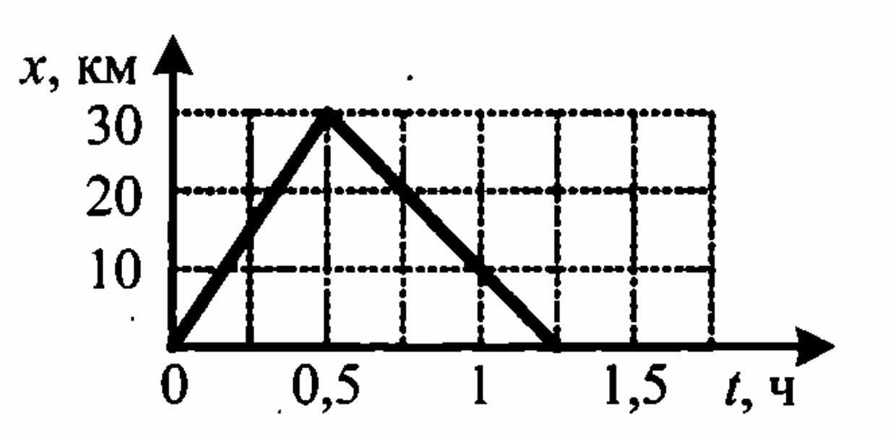

Задачи
Механика
Кинематика
Механическое движение
№ 1
Два тела, брошенные с поверхности земли вертикально вверх, достигли высот 10 м и 20 м и упали на землю. Насколько отличаются пути, пройденные этими телами?
№ 2
Два тела, брошенные с поверхности земли вертикально вверх, достигли высот 10 м и 20 м и упали на землю. Во сколько раз путь, пройденный первым телом, меньше пути, пройденного вторым?
№ 3
Человек обошел круглое озеро диаметром 1 км. Выберите два
верных утверждения, укажите их номера.
1) Путь равен 3,14 км, модуль перемещения равен 1 км.
2) Путь равен 3,14 км, модуль перемещения равен нулю.
3) Путь равен нулю, модуль перемещения равен 3,14 км.
4) Путь и модуль перемещения совпадают.
5) Траекторией движения человека является окружность.
№ 4
Точка движется по окружности радиусом 2 м, и ее перемещение равно по модулю диаметру. Чему равен путь, пройденный телом?
Равномерное прямолинейное движение
№ 5
Тело, двигаясь равномерно и прямолинейно, за 10 с перемещается из точки А с координатами (0; 2) в точку В с координатами (4; -1). Чему равен модуль скорости?
№ 6
Тело, двигаясь равномерно и прямолинейно, за 10 с перемещается из точки А с координатами (1; 2) в точку В с координатами (4; -1). Под каким углом к оси ОХ направлена скорость тела?
№ 7
Координата тела изменяется с течением времени согласно формуле х = 15 - 3t. Чему равна координата этого тела через 3 с после начала движения?
№ 8
Координата тела изменяется с течением времени согласно формуле х = 10 - 4t. Чему равен модуль скорости тела через 5 с после начала движения?
№ 9
На рисунке представлен график движения тела. Определите значение скорости его движения в момент времени 5 с.
№ 10
На рисунке представлен график движения автобуса из пункта А в пункт В и обратно. Пункт А находится в точке х = 0, а пункт В — в точке х = 30 км. Чему равна максимальная скорость автобуса на всем пути следования туда и обратно?
№ 11
Бусинка может свободно скользить по неподвижной горизонтальной спице. На графике изображена зависимость ее координаты от времени. Выберите два утверждения, которые можно сделать на основании графика.
1) Скорость бусинки на участке 1 постоянна, а на участке 2
равна нулю.
2) Проекция ускорения бусинки на участке 1 положительна,
а на участке 2 отрицательна.
3) Участок 1 соответствует равномерному движению бусинки,
а на участке 2 бусинка неподвижна.
4) Участок 1 соответствует равноускоренному движению
бусинки, а на участке 2 — равномерному.
5) Проекция ускорения бусинки на участке 1 отрицательна,
а на участке 2 — положительна.
№ 12
Катер, двигаясь вдоль по реке, проходит 2 км по течению, разворачивается (мгновенно) и возвращается в пункт отправления. Скорость катера относительно воды 36 км/ч, а скорость течения реки 4 км/ч. Чему равно полное время движения катера туда и обратно?
№ 13
Пловец плывет перпендикулярно направлению течения реки. Чему равна скорость пловца относительно берега реки, если его скорость относительно воды 0,4 м/с, а скорость течения 0,3 м/с?
№ 14
Пловец переплывает реку по кратчайшему пути. Скорость пловца относительно воды 5 км/ч, скорость течения 3 км/ч. Чему равна. скорость пловца относительно берега?
№ 15
Самолет летит из города А в город В со скоростью 328 км/ч относительно воздуха. На трассе полета со скоростью 72 км/ч дует ветер, направление которого перпендикулярно отрезку, соединяющему эти города. Определите модуль скорости самолета относительно земли.
№ 16
В безветренную погоду самолет затрачивает на перелет между городами 6 часов. Если во время полета дует боковой ветер со скоростью 20 м/с перпендикулярно линии полета, то самолет затрачивает на перелет на несколько минут больше. Определите, на какое время увеличивается время полета, если скорость самолета относительно воздуха постоянна и равна 328 км/ч.
Относительность механического движения
№ 17
Два автомобиля движутся по прямой дороге в одном направлении: один — со скоростью 110 км/ч, а второй — со скоростью 60 км/ч. Чему равен модуль скорости первого автомобиля в системе отсчета, связанной со вторым автомобилем?
№ 18
Два велосипедиста едут в одном направлении по прямому шоссе с одинаковыми скоростями 18 м/с. Чему равна относительная скорость велосипедистов?
№ 19
Два автомобиля едут по прямому шоссе в одном направлении: первый — со скоростью 40 км/ч, а второй — со скоростью 120 км/ч. Определите скорость второго автомобиля относительно первого.
№ 20
Два автомобиля движутся по прямому шоссе навстречу друг другу: первый — со скоростью 50 км/ч, второй — со скоростью 110 км/ч. Определите модуль скорости второго автомобиля от носительно первого.
№ 21
Два самолета, пассажирский и истребитель, летят во взаимно перпендикулярных направлениях. Скорость пассажирского лайнера равна по модулю 330 км/ч, а модуль скорости истребителя равен 440 км/ч. Вычислите модуль скорости истребителя относительно пассажирского лайнера.
№ 22
Два автомобиля движутся по взаимно перпендикулярным дорогам. Скорость первого автомобиля относительно дороги по модулю равна 60 км/ч, а модуль скорости второго относительно первого равен 75 км/ч. Определите модуль скорости второго автомобиля относительно дороги.
Средняя скорость
Равноускоренное прямолинейное движение
№ 23
Лыжник равноускоренно съезжает со снежной горки. Скорость лыжника в конце спуска 15 м/с. Время спуска 30 с. С каким ускорением движется лыжник? Спуск начинается из состояния покоя.
№ 24
Лыжник съехал с горы, двигаясь прямолинейно и равноускоренно. За время 20 с скорость лыжника возросла от 4 м/с до 18 м/с. С каким ускорением спускался лыжник?
№ 25
Санки съехали с одной горки и въехали на другую. Во время подъема на горку скорость санок, двигавшихся прямолинейно и равноускоренно, за 4 с изменилась от 12 м/с до 2 м/с. Определите модуль ускорения санок.
№ 26
Тело начинает двигаться равноускоренно с начальной скоростью 4 м/с и ускорением 5 м/с2. Найдите увеличение скорости тела за 6 с.
№ 27
Лыжник скатывается с горки, двигаясь прямолинейно и равноускоренно. За время спуска скорость лыжника увеличилась на 7,5 м/с. Ускорение лыжника 0,5 м/с2. Сколько времени длился спуск?
№ 28
Лыжник, начинает спускаться с горы, имея скорость 4 м/с. Время спуска 30 с. Ускорение лыжника при спуске постоянно и равно 0,5 м/с2. Какова скорость лыжника в конце спуска?
№ 29
Автомобиль, трогаясь с места, движется с ускорением 3 м/с2. Чему равна скорость автомобиля через 4 с?
№ 30
Шарик свободно скатывается по наклонному прямому желобу с постоянным ускорением, по модулю равным 3 м/с2. Определите скорость шарика через 2 с.
№ 31
Легковой и грузовой автомобили одновременно начинают движение из состояния покоя. Ускорение легкового автомобиля в 3 раза больше, чем у грузового. Во сколько раз большую скорость разовьет легковой автомобиль за то же время?
№ 32
Мотоциклист и велосипедист одновременно начинают равноускоренное движение из состояния покоя. Ускорение мотоциклиста в 3 раза больше, чем у велосипедиста. Во сколько раз больше времени понадобится велосипедисту, чтобы достичь скорости 50 км/ч?
№ 33
Во время игры девочка побежала прямолинейно с постоянным ускорением 1,6 м/с2. Какой путь она пробежала за первые 4 с?
№ 34
При прямолинейном равноускоренном движении с начальной скоростью, равной нулю, путь, пройденный телом за три секунды от начала движения, больше пути, пройденного за первую секунду. Во сколько раз?
№ 35
К. Э. Циолковский в книге «Вне Земли», описывая полет райеты, отмечал, что через 10 с после старта ракета находилась на расстоянии 5 км от поверхности Земли. С каким ускорением двигалась ракета?
№ 36
Каретка спускается по наклонной плоскости длиной 15 см в течение 0,26 с. Определите ускорение каретки, если движение начинается из состояния покоя. Ответ округлите до десятых.
№ 37
Уклон длиной 50 м лыжник прошел за 10 с, двигаясь с ускорением 0,2 м/с2. Чему равна скорость лыжника в конце уклона?
№ 38
Находящемуся на горизонтальной поверхности стола бруску сообщили скорость 5 м/с. Под действием сил трения брусок движется с ускорением 1 м/с2. Чему равен путь, пройденный бруском за 6 с?
№ 39
Автомобиль трогается с места и движется с постоянным ускорением 5 м/с2. Какой путь прошел автомобиль, если его скорость в конце пути оказалась равной 15 м/с?
№ 40
Скорость пули при вылете из ствола пистолета равна 250 м/с. Длина ствола 0,1 м. Определите ускорение пули внутри ствола, если считать ее движение равноускоренным.
№ 41
На последнем километре тормозного пути, скорость поезда уменьшилась на 10 м/с. Определите скорость в начале торможения, если общий тормозной путь поезда составил 4 км, а торможение было равнозамедленным.
№ 42
Зависимость координаты от времени для некоторого тела описывается уравнением x = 8t-2t2 (м). Чему равна координата тела через 3 с?
№ 43
Чему равно перемещение материальной точки за 5 с, движение которой вдоль оси ОX описывается уравнением х - 6 - 4t + t2 (м)?
№ 44
Зависимость координаты от времени для некоторого тела описывается уравнением x = 12t-2t2 (м). В какой момент времени проекция скорости тела на ось 0X равна нулю?
№ 45
Зависимость пути от времени для прямолинейно движущегося тела имеет вид: s(t) = 2t + 3t2, где все величины выражены в СИ. Чему равно ускорение тела?
№ 46
Установите соответствие между зависимостью координаты тела
от времени (где все величины выражены в СИ) и значениями
проекций его начальной скорости и ускорения.
КООРДИНАТА
А) х = 6t2
Б) х = 6-3t
НАЧАЛЬНАЯ СКОРОСТЬ И УСКОРЕНИЕ
1) v0x = -3 м/с, аx = 0
2) v0x = 6 м/с, аx = 3 м/с2
3) v0x = 0, аx = 12 м/с2
4) v0x = 3 м/с, аx = 6 м/с2
№ 47
Установите соответствие между зависимостью проекции скоро
сти тела от времени и зависимостью проекции перемещения это
го тела от времени для одного и того же движения.
ПРОЕКЦИЯ СКОРОСТИ
А) vx = 3 - 2
Б) vx = 5 + 4t
ПРОЕКЦИЯ ПЕРЕМЕЩЕНИЯ
1) sx = 5t + 2t2
2) sx = 5t + 4t2
3) sx = 3t - 2t2
4) sx = 3t - t2
№ 48